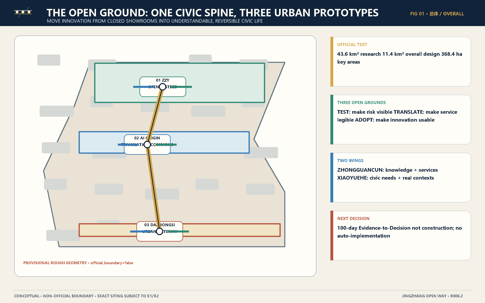
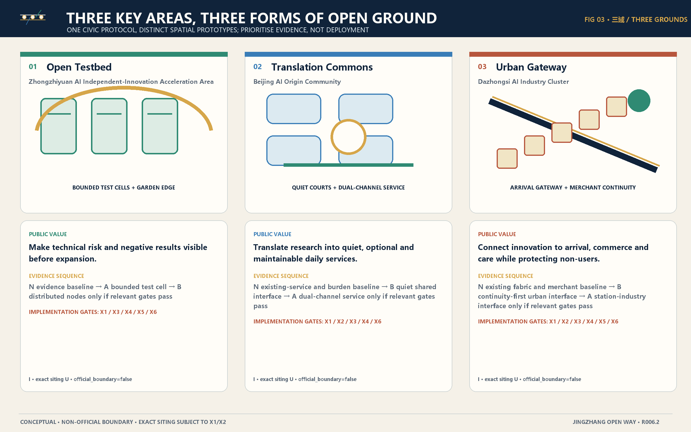
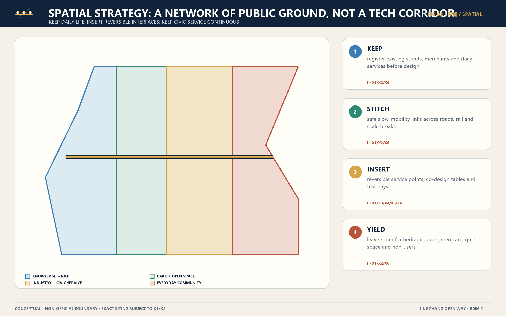
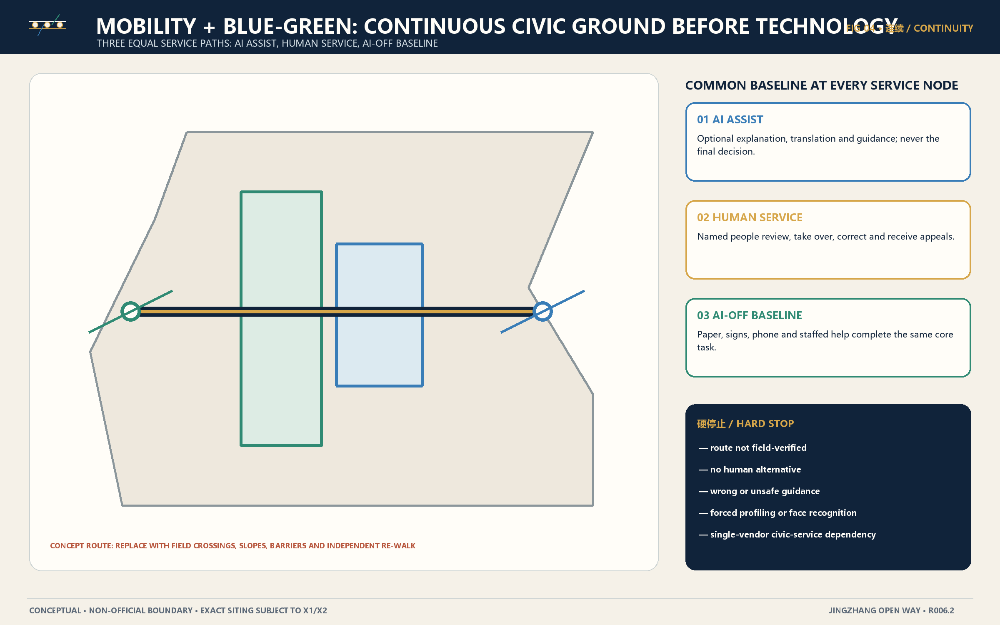
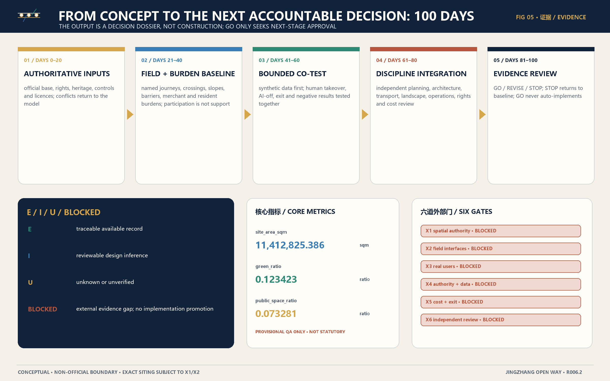

01 / public proposition
Overview map
The Open Ground is not a technology showroom. It secures access, legibility, human takeover and exit before technology becomes an optional enhancement.

On mobile, scroll this figure horizontally for detail
agent.1 / identity + framework
Three positionings, five functions and the open-bracket identity
All taskbook positionings and functions are explicit. Completion means content projection only; spatial and brand-professional decisions remain gated.
Three taskbook positionings
Five functions and spatial leads
Spatial lead: ZONE-ZZY
Spatial lead: ZONE-ORIGIN
Spatial lead: WING-XIAOYUEHE
Spatial lead: ZONE-DZS
Spatial lead: ZONE-ZZY
Form an open bracket from two parallel rail lines, linking three open nodes with one fine wing line on each side. The parallel lines stand for JingZhang memory and service continuity; the nodes stand for the three zones; the wing lines stand for knowledge services and scenario empowerment; the open ends show a system that keeps learning rather than a closed crest.
I · MONOCHROME + SMALL-SIZE LEGIBLE · NO INSTITUTIONAL IMITATION · COLOUR NOT SOLE CODERegional coordination interfaces (no partnership claim)
community-life scenario exchange and burden review
I/BLOCKED X3/X4 · NO PARTNERSHIP CLAIMresearch-platform and test-method exchange
I/BLOCKED X3/X4 · NO PARTNERSHIP CLAIMlarge-science-to-civic-use translation methods
I/BLOCKED X3/X4 · NO PARTNERSHIP CLAIMrobotics and intelligent-terminal test governance exchange
I/BLOCKED X3/X4 · NO PARTNERSHIP CLAIMportable evidence standards and open-result exchange
I/BLOCKED X3/X4 · NO PARTNERSHIP CLAIM02 / authority boundary
Three levels
Textual approximations come from the announcement; every closed boundary is provisional rough geometry.
03 / three open grounds
Key areas
Open Testbed
Zhongzhiyuan AI Independent-Innovation Acceleration Area
Make risk, manual stop and negative results visible first.
Translation Commons
Beijing AI Origin Community
Translate research into understandable, optional and maintainable service.
Urban Gateway
Dazhongsi AI Industry Cluster
Connect innovation to arrival, merchants and care while protecting non-users.

On mobile, scroll this figure horizontally for detail
04 / spatial systems
Land-use zoning, walking and mobility, blue-green space, buildings and renewal projects

KEEP · STITCH · INSERT · YIELD · On mobile, scroll this figure horizontally for detail

AI ASSIST · HUMAN SERVICE · AI-OFF BASELINE · On mobile, scroll this figure horizontally for detail
agent.2 / ecosystem
Five cases, six-stage ecosystem chain and eight resource classes
Mechanisms are translated without copying foreign results, partners, investment or institutions into JingZhang claims.
Five mechanism precedents
Transfer: Use a real district as a governed co-creation and experimentation platform, evaluating everyday value rather than technology spectacle.
Do not transfer: No Helsinki governance model, result or user finding is evidence of JingZhang feasibility.
CASE-REFERENCE-SMART-KALASATAMA-202108 · E→ITransfer: Distribute innovation activity across everyday neighbourhoods to create a comparable, learning-oriented living-lab network.
Do not transfer: No named Helsinki district arrangement or result is copied as a local commitment.
CASE-REFERENCE-HELSINKI-INNOVATION-DISTRICTS-202312 · E→ITransfer: Build an entrepreneurship ecosystem through shared support, proximity and staged space provision rather than a single landmark building.
Do not transfer: No tenancy, investment, land or institutional arrangement is transferred without local authority and evidence.
CASE-REFERENCE-JTC-LAUNCHPAD-202205 · E→ITransfer: Organise industry, education and district-operation interfaces in one urban system and connect participants through a governable district platform.
Do not transfer: No Singapore platform, data rule or institutional commitment is authority for JingZhang.
CASE-REFERENCE-JTC-PUNGGOL-DIGITAL-DISTRICT-202601 · E→ITransfer: Treat termination, authority boundaries and final public-institution judgement as part of innovation governance rather than a footnote erased after failure.
Do not transfer: This is a governance lesson, not proof of local risk, legal advice or project comparability.
CASE-REFERENCE-WATERFRONT-TORONTO-TERMINATION-202005 · E→ISix-stage public-problem conversion chain
problem statement, affected groups, do-nothing baseline, burden hypothesis
WING-XIAOYUEHE · Iknowledge, standards, IP, professional-service and conditional finance pathways
WING-ZHONGGUANCUN · Itest protocol, low-tech control, human takeover, AI-off, negative-result record
ZONE-ZZY · Iplain-language service proposition, user burden map, accessible service chain
ZONE-ORIGIN · Ismall-business, arrival, public-space and non-adoption evidence
ZONE-DZS · IGO / REVISE / STOP dossier for next-stage approval only
PROJECT_PARTY_AND_INDEPENDENT_REVIEWERS · IEight resources and no-inference rules
Do not infer demand, availability or commitment; validate roles and safeguarding.
Use space types only until X1 confirms parcels, controls and rights.
Use capability categories, not invented company lists, output or recruitment commitments.
Describe a review interface only; no funding, subsidy or return is promised.
Capacity, energy, security, procurement and service level remain X4/X5/X6.
Start with synthetic or minimum necessary data; legal basis and contracts remain X4.
A scenario is a testable hypothesis, not an approved operation.
Named authority, appeal, remedy, audit, export, deletion and STOP are mandatory before a public pilot.
agent.3 / civic AI
AI scenarios · twelve scenarios, four tests and eight personas
Every card shows problem, people, place, AI, human, AI-off, minimum data, public value, hard stops and evidence gates; real-user and operating conclusions remain gated by X3/X4.
- Problem
- People may need a legible, step-free and non-smartphone-dependent path from arrival to daily destinations.
- People
- PER-03, PER-04, PER-05
- Place
- station-city threshold, staffed help point and slow-mobility decision points; exact entrance and route U
- AI
- Offer optional route explanation and disruption updates without automated final accessibility claims.
- Human
- A named staffed help channel checks exceptions and can override guidance.
- AI-off
- High-contrast physical signs, printed route card and staffed/telephone help provide the same core function.
- Minimum data
- destination category, selected accessibility need and current public disruption; no identity required by default
- Public value
- independent access and reduced wrong-route burden
- Hard stops
- wrong or unsafe guidance; no human alternative; route not field-verified; forced personal profiling
- Problem
- A resident may need to understand and complete a service request without being forced into one digital channel.
- People
- PER-04, PER-05, PER-07
- Place
- quiet shared service interface with private consultation option
- AI
- Plain-language explanation and form assistance, never final eligibility or enforcement decisions.
- Human
- A service worker reviews, corrects and accepts appeals.
- AI-off
- Counter, phone and paper route remain available and equivalent for the core transaction.
- Minimum data
- only fields legally necessary for the chosen transaction
- Public value
- understandable access, choice and appeal
- Hard stops
- no explanation or appeal; automated final decision; no withdrawal or deletion path; digital-only access
- Problem
- Digital change and renewal can shift rent, footfall, workload or platform power onto existing operators.
- People
- PER-02, PER-06
- Place
- existing commercial interface and optional shared service point; exact businesses and tenancies U
- AI
- Optional translation, queue or inventory support using exportable data and no opaque merchant ranking.
- Human
- Merchant and named operator approve changes, disputes and shutdown.
- AI-off
- Cash/manual ordering, physical directory and human service preserve the core transaction.
- Minimum data
- merchant-selected operational fields; no forced customer profiling
- Public value
- continuity, fair participation and non-adoption rights
- Hard stops
- rent pressure or displacement; forced platform adoption; opaque scoring; no export or exit
- Problem
- Researchers and external collaborators need clear, rights-bounded ways to find facilities, partners and public programmes.
- People
- PER-01, PER-08
- Place
- public-facing collaboration desk and bookable commons outside controlled research areas
- AI
- Optional capability matching from public, consented profiles with explanation and correction.
- Human
- A programme steward validates introductions and resolves rights or safeguarding questions.
- AI-off
- Curated directory, staffed desk and scheduled open sessions preserve discovery and introduction.
- Minimum data
- public capability tags and contact choice; no inferred sensitive attributes
- Public value
- lower-friction knowledge exchange with clear rights
- Hard stops
- fabricated institutional affiliation; private research disclosure; pay-to-rank matching; no consent or correction
- Problem
- A person may need visible, non-surveillant help after normal service hours.
- People
- PER-03, PER-04, PER-05
- Place
- lit human-help beacon at verified public nodes; exact nodes and service hours U
- AI
- Optional multilingual triage that never performs automated enforcement or identity recognition.
- Human
- A trained human service or emergency authority makes final triage and response decisions.
- AI-off
- Clearly marked phone/intercom, lighting and published human response route remain operational.
- Minimum data
- help category, location and caller-chosen contact; retain only under a lawful incident rule
- Public value
- visible and accountable access to help
- Hard stops
- automated enforcement; biometric identification; unverified response service; no safe human escalation
- Problem
- A service system can exclude people who do not own, trust or confidently use a smartphone.
- People
- PER-05, PER-07
- Place
- staffed daily-service point connected to physical wayfinding and seating
- AI
- Optional spoken or visual explanation with simple confirmation and no hidden scoring.
- Human
- A trained person can complete the full task and correct the record.
- AI-off
- Paper, phone, counter and volunteer-supported route remain the default-capable baseline.
- Minimum data
- transaction minimum only; no inferred vulnerability profile
- Public value
- dignity, choice and continuity across digital confidence levels
- Hard stops
- forced digitisation; no human completion path; patronising or inaccessible interface; unexplained data retention
- Problem
- Public events can become commercially dominant, linguistically exclusive or inaccessible without explicit public-use rules.
- People
- PER-05, PER-06, PER-08
- Place
- reversible event kit in a verified public space with protected clear routes
- AI
- Optional live captioning, translation and schedule explanation with visible confidence limits.
- Human
- Event steward corrects translation, manages safeguarding and maintains access.
- AI-off
- Printed bilingual schedule, human interpreters where commissioned and physical noticeboard preserve core participation.
- Minimum data
- anonymous attendance count where lawful; registration only when necessary and consented
- Public value
- open cultural and technical participation without commercial capture
- Hard stops
- blocked accessible route; commercial priority displacing public use; unreviewed harmful translation; unconsented recording
- Problem
- Maintenance signals may help prioritise care, but sensor or model output cannot replace field inspection and accountable work orders.
- People
- PER-04, PER-07
- Place
- blue-green care marker and maintenance access point; ecological and hydraulic conditions U
- AI
- Summarise public reports and sensor alerts for human inspection priority, with source and confidence shown.
- Human
- A qualified maintainer verifies conditions and authorises action.
- AI-off
- Scheduled inspection, phone/paper work order and visible maintenance log continue.
- Minimum data
- location, issue type, time and optional contact; no bystander surveillance
- Public value
- visible stewardship and faster accountable maintenance
- Hard stops
- automated physical action without inspection; ecological harm; hidden work prioritisation; surveillance unrelated to maintenance
- Problem
- Civic AI claims need repeatable tests, human takeover and exit evidence before exposure to real users or systems.
- People
- PER-01, PER-07
- Place
- bounded test cell separated from production systems and public routes
- AI
- Run declared tests on synthetic or cleared de-identified data with complete logs.
- Human
- Test lead can pause, inspect and invalidate a run.
- AI-off
- Manual procedure and low-tech control demonstrate the service baseline and recovery path.
- Minimum data
- synthetic by default; any cleared dataset requires purpose, licence, minimisation and retention record
- Public value
- evidence before procurement or public exposure
- Hard stops
- real personal data without authority; production-system control; unlogged model or tool change; no vendor exit or reproducible control
- Problem
- Embodied systems need a bounded test with physical separation, manual stop and accessibility review before any public-space operation.
- People
- PER-01, PER-03, PER-07
- Place
- enclosed or clearly separated low-speed test bay; no route or engineering geometry approved
- AI
- Execute a declared low-speed task with geofencing, visible status and incident logging.
- Human
- A trained supervisor holds an immediate physical stop and final decision authority.
- AI-off
- The test stops safely; any service task transfers to a human or non-robotic method.
- Minimum data
- system telemetry and test-zone safety records; no general facial recognition
- Public value
- safe validation without treating public space as an unconsented laboratory
- Hard stops
- no physical stop; uncontrolled public mixing; unverified geofence or route; surveillance beyond the safety purpose
- Problem
- People need a place to understand what an AI-enabled service does, what it cannot do and how to challenge it.
- People
- PER-01, PER-05, PER-06, PER-08
- Place
- quiet learning commons linked to the contribution and evidence display
- AI
- Interactive explanation uses current, cited examples and exposes uncertainty and data boundaries.
- Human
- Facilitator answers questions, corrects content and records unresolved challenges.
- AI-off
- Printed explainers, physical models and facilitated workshops deliver the same learning goals.
- Minimum data
- none for walk-in learning; optional anonymous questions
- Public value
- informed participation and challenge rights
- Hard stops
- marketing presented as evidence; uncited technical claim; collection of participant profiles without need; no correction path
- Problem
- An AI-enabled service needs an explicit incident path that protects people, preserves evidence and defers to lawful authority.
- People
- PER-03, PER-07
- Place
- operating protocol visible at every service point rather than a new physical control room claim
- AI
- Detect declared service anomalies and present evidence to a human without automated final enforcement.
- Human
- Named incident lead decides pause, notification, remedy and authority escalation.
- AI-off
- Service returns to the published manual baseline; logs and affected-person contact routes remain available.
- Minimum data
- incident-essential records under a lawful retention schedule
- Public value
- accountability, remedy and continuity under failure
- Hard stops
- automated final decision; obstruction of lawful authority; loss or alteration of evidence; no affected-person notice or remedy path
Four industry tests
Protocol: Compare a declared AI service with a low-tech control, human takeover and AI-off recovery using synthetic or cleared data.
Outputs: versioned test protocol; failure injection log; human takeover result; AI-off recovery result; vendor export/deletion test; negative-result note
Boundary: Pass is limited to the stated test environment and version; it is never approval for public deployment.
I/BLOCKED · X4/X5/X6Protocol: Turn one research capability into a plain-language, optional service hypothesis and test comprehension, burden, takeover and non-adoption with compensated participants.
Outputs: capability and limitation statement; service blueprint across AI/human/AI-off; participant and burden record; dissent and non-adoption reasons; revision or STOP decision
Boundary: No research institution, participant or operator commitment is assumed until documented.
I/BLOCKED · X3/X4/X6Protocol: Compare optional digital support with existing manual practice, measuring workload, cost, footfall burden, exportability and non-adoption without changing tenancy or access rights.
Outputs: merchant-selected problem statement; existing-service baseline; benefit-burden map; cost and labour record; export and exit receipt; compensation and non-adoption record
Boundary: No commercial growth, rent effect or adoption rate is assumed or promised.
I/BLOCKED · X3/X4/X5/X6Protocol: Field-walk one named daily journey with diverse compensated participants, comparing physical signs, human help and optional AI assistance across normal and failure conditions.
Outputs: dated route and segment measurements; accessibility obstacles and workarounds; assistance time and burden; wrong-route and recovery record; independent repeat walk; disposition log
Boundary: No route, entrance, timing or accessibility claim exists before the field record and independent review.
I/BLOCKED · X1/X2/X3/X4/X6Eight research personas
Test a capability without overstating readiness or exposing people and production systems.
research persona hypothesis I; real participant evidence X3 BLOCKEDAccess useful support while keeping control of cost, records, adoption and exit.
research persona hypothesis I; real participant evidence X3/X5 BLOCKEDComplete a reliable station-to-destination journey under normal and disrupted conditions.
research persona hypothesis I; route evidence X2/X3 BLOCKEDReach and use services with dignity, choice and a verified step-free path.
research persona hypothesis I; accessibility evidence X2/X3/X6 BLOCKEDComplete daily tasks without a personal device or forced digital identity.
research persona hypothesis I; real participant evidence X3/X6 BLOCKEDExplore AI and city-making safely, critically and without being reduced to an audience metric.
research persona hypothesis I; safeguarding and user evidence X3/X4 BLOCKEDMaintain service, handle exceptions and stop unsafe automation without hidden workload transfer.
research persona hypothesis I; operating evidence X3/X4/X5 BLOCKEDUnderstand the belt, find a legitimate public collaboration route and respect local rights and context.
research persona hypothesis I; partnership and user evidence X3/X4 BLOCKEDagent.4 / civic space
Heritage-park public space, four landmarks, a contribution ledger and nine components
Establish north-south narrative continuity and east-west everyday interfaces, then answer landmark and intelligent-native consumer/business tasks through reversible civic capacity; every heritage, route, engineering and operating boundary remains gated.
Use the public brief's JingZhang heritage-park context to link three zone landmarks while a distributed contribution-memory line spans the belt, two-way slow-mobility decision points, low-tech service points and blue-green care nodes, strengthening north-south narrative continuity and east-west everyday interfaces. No conclusion is made about exact routes, crossings, bridges, tunnels, heritage controls, green/blue lines or engineering feasibility.
At Dazhongsi, merchant continuity, optional digital service, reversible public events and human/AI-off business support answer the intelligent-native consumer-and-business task; no merchant, brand, tenancy, footfall, revenue, partnership or approved operation is assumed.
JingZhang heritage park is taskbook context; heritage, paths, bridges/tunnels, conservation, green/blue lines, traffic, rights and engineering boundaries await X1/X2/X6 and an authoritative inventory.Four civic-capability landmarks
Make the full-stack test chain, human control and negative results publicly legible.
AI-off: Physical diagrams, mechanical controls and facilitated demonstration retain the full educational function.
I/BLOCKED X1/X2/X4/X5/X6 · EXACT SITE UTurn research into understandable public questions, service prototypes and dissent records.
AI-off: Books, physical models, printed evidence cards and facilitators retain the learning and co-design function.
I/BLOCKED X1/X2/X3/X4/X6 · EXACT SITE UMake arrival, human help, small-business continuity and AI-off service visible at an urban threshold.
AI-off: Physical directory, printed route map, staffed help and telephone remain fully functional.
I/BLOCKED X1/X2/X3/X4/X5/X6 · EXACT SITE URecognise verifiable public contributions, maintenance, dissent and negative results across the belt.
AI-off: Printed and tactile records remain readable; the public index can be maintained manually.
I/BLOCKED X1/X2/X3/X4/X6 · EXACT SITE URecognises open methods, cleared data, accessibility, maintenance/care, community knowledge, dissent, negative results, justified STOP and public explanation; prohibits facial recognition, social scoring, popularity ranking, pay-to-rank and unconsented identity display.
I/BLOCKED · X3/X4/X6Nine reversible public-space components
link the identity, wayfinding and service-continuity message
I/BLOCKED X1/X2/X6 · AI-off: permanent direction, distance category and human-help informationshow AI assist, human service and AI-off baseline as equal choices
I/BLOCKED X1/X3/X4/X5/X6 · AI-off: paper, phone and human service complete the core tasksupport compensated participation, plain-language review and dissent
I/BLOCKED X1/X3/X4/X6 · AI-off: facilitated cards, drawings and paper recordseparate controlled validation from production and uncontrolled public space
I/BLOCKED X1/X2/X4/X5/X6 · AI-off: safe stop and manual baseline demonstrationmake arrival, decision, rest and help points legible across sensory and mobility needs
I/BLOCKED X1/X2/X3/X6 · AI-off: physical and human guidance remains primarydisplay what was tested, what failed, what changed and why a STOP occurred
I/BLOCKED X3/X4/X6 · AI-off: physical index remains complete enough to understand statusconnect public reports, verified maintenance and visible disposition
I/BLOCKED X1/X2/X4/X5/X6 · AI-off: manual inspection and phone/paper work ordermake a verified human-help route visible without general surveillance
I/BLOCKED X1/X2/X4/X5/X6 · AI-off: direct human contact remains availablehost learning, co-design and developer events without permanently occupying public space
I/BLOCKED X1/X2/X3/X4/X6 · AI-off: printed agenda, human facilitation and physical displayagent.5 / culture + wayfinding
From Opening a Railway to Opening Knowledge
The narrative does not use railway culture as technological decoration. It treats connection, maintenance, collaboration and continuity of service as public values spanning three eras: JingZhang railway culture asks how infrastructure connects people and places; Zhongguancun innovation culture asks how knowledge enters the city through research, entrepreneurship and collaboration; AI culture requires the contributions, limits, failures and exits of algorithms, data and models to remain understandable and traceable to the public. Specific events, heritage assets, people, dates and conservation values require an authoritative historical inventory and professional review.
Railway memory as a public story of connecting people and places; exact history subject to source review.
CIVIC_SPINE and verified heritage interpretation pointsRecognise the often-invisible labour that keeps infrastructure and services working.
CMP-07, CMP-08 and contribution ledgerTreat reusable knowledge, methods and negative results as public innovation assets.
LMK-01 and LMK-04Turn research into understandable questions and optional services with real-user review.
LMK-02Judge innovation by continuity, accessibility, burden and remedy in everyday city life.
WING-XIAOYUEHE, LMK-03 and CMP-05GO, REVISE and STOP all leave evidence for the next accountable decision.
LOOP-R006-THREE-ZONES-TWO-WINGSHierarchy covers belt identity, zone/wing role, cultural chapter, verified direction/accessibility, AI/human/AI-off choice, and source/state/appeal. Chinese and English are separately composed; colour is never the only code; tactile/audio layers await X6; the overall mark stays separate from chapter symbols.
I/BLOCKED · HERITAGE INVENTORY U · X1/X2/X6agent.6 / annual learning
Event identity, four seasons, developer community, four opening levels and conversion
All dates, venues, hosts, budgets, partners and government support are U; GO only seeks next-stage approval.
Reuse the belt's dual lines and open bracket as the stable motif; distinguish four seasons by chapter name, number and pattern, and show OPEN-0 to OPEN-3 with both level text and state shape, never colour alone. Every poster, registration page, site sign, evidence card and annual dossier shows source, E/I/U/BLOCKED state, AI-off path and correction route.
Activity graphics communicate a concept programme and evidence state only; they never imply confirmed dates, hosts, partners, budgets, government support or implementation approval.Four seasons and auditable outputs
Collect public problems, do-nothing baselines, affected groups, burdens and non-adoption reasons before solution selection.
Lead roles: public-interest programme steward; accessible participation lead
Outputs: source-linked problem briefs; compensated participation record; dissent and exclusion audit; shortlist or STOP reasons
I/BLOCKED X3/X4/X6 · DATES/HOST/BUDGET URun bounded industry tests with low-tech controls, human takeover, AI-off and visible failure records.
Lead roles: test lead; safety and data lead; independent observer
Outputs: versioned protocols; test and failure logs; AI-off drill; public plain-language result
I/BLOCKED X2/X4/X5/X6 · DATES/HOST/BUDGET ULet the public experience verified scenarios, understand limits and recognise code, care, maintenance, translation, dissent and negative results.
Lead roles: public programme lead; accessibility lead; rights and attribution lead
Outputs: accessible public route; contribution ledger update; participant feedback and burden record; rights and status audit
I/BLOCKED X1/X2/X3/X4/X6 · DATES/HOST/BUDGET UReview public value, burden, maintenance, rights, cost and exit; issue GO, REVISE or STOP recommendations for next-stage approval.
Lead roles: project-party decision owner; independent reviewers; appeal and remedy lead
Outputs: annual evidence ledger; open issues and dissent; witnessed exit/deletion/AI-off drill; GO / REVISE / STOP dossier
I/BLOCKED X3/X4/X5/X6 · DATES/HOST/BUDGET URecurring cadence
questions, unresolved issues and correction log
protocol changes, failure reports and maintenance burden
scenario state, gate state, burden and next decision
signed dispositions and GO / REVISE / STOP dossier
Developer community: eight-step pathway and six asset classes
Pathway: public problem intake → open method or challenge brief → synthetic-data sandbox → peer reproducibility review → human/AI-off/exit drill → compensated user and burden review → independent assurance → project-party next-stage decision
Assets: versioned problem briefs; test harnesses and protocol templates; negative-result library; rights and source records; maintenance and AI-off playbooks; contribution ledger
Rules: No preferred vendor status is implied by participation; A public-interest problem owner is distinct from a solution vendor; Reproducibility and exit evidence count as contributions; Real users are compensated and never represented as supporters by default; Production access is prohibited before authority and independent review.
Four opening levels
Allowed: desk research, public-source review and problem framing
Not allowed: claims of demand, feasibility or user validation
Allowed: bounded technical tests with no public or production exposure
Not allowed: real personal data or production control
Allowed: consented compensated test with named human authority and stop
Not allowed: open public service or automatic expansion
Allowed: only after relevant X1-X6 evidence passes and the project party separately approves the stage
Not allowed: treating GO as automatic implementation
Attract through a public problem and open contribution call → Qualify through source, rights and capability review → Validate in a bounded sandbox → Translate with real users and frontline workers → Assure public value, accessibility, cost and exit independently → Decide GO / REVISE / STOP → If GO, seek project-party next-stage approval; do not auto-implement
GO ≠ AUTO-IMPLEMENT · REVISE → EVIDENCE · STOP → BASELINELinks to landmarks and public-experience operation
Use the Translation Commons and Quiet Co-Design Table for problem intake, burden records and dissent; exact venue and owner U.
Run bounded tests in the Reversible Test Bay and publish plain-language and negative results on the evidence wall; exact venue and owner U.
Use the Civic Continuity Gateway, Contribution Memory Line and reversible event kit for public experience while protecting daily access and non-users; exact venue and owner U.
Review annual evidence, dissent, exit and the next decision through the contribution index and evidence wall; exact venue and owner U.
06 / brief response
Task coverage
These cards index six complete modules; the decision-readable deliverables are the agent.1–agent.6 sections above.
Belt concept, identity and functional coordination
names 2 · positionings 3 · functions 5 · zones 3 · wings 2 · logo_direction 1
CONTENT COMPLETE · EXTERNAL EVIDENCE BLOCKEDFull-stack AI innovation system and world-class ecosystem
cases 5 · value_chain_stages 6 · enabling_resources 8
CONTENT COMPLETE · EXTERNAL EVIDENCE BLOCKEDAI-enabled scenarios and an intelligent, vibrant city
scenario_cards 12 · industry_tests 4 · personas 8
CONTENT COMPLETE · EXTERNAL EVIDENCE BLOCKEDAI public space, intelligent-native activity and civic landmarks
landmarks 4 · honor_system 1 · components 9
CONTENT COMPLETE · EXTERNAL EVIDENCE BLOCKEDJingZhang, Zhongguancun and new AI culture narrative
narrative_layers 3 · spatial_chapters 6 · wayfinding_systems 1 · international_copy_sets 1
CONTENT COMPLETE · EXTERNAL EVIDENCE BLOCKEDGlobal AI activity system and long-term operation
seasonal_programmes 4 · recurring_cadences 4 · opening_levels 4 · conversion_pathways 1
CONTENT COMPLETE · EXTERNAL EVIDENCE BLOCKED07 / evidence to decision
Core metrics

On mobile, scroll this figure horizontally for detail
08 / provenance
Sources
OFFICIAL-BJ-GHZRZY-HDHJ-20260509-SCOPE— 百年京张AI创新带城市设计国际方案征集资格预审公告SUBMISSION-REFERENCE-AGENT-TASKBOOK-20260605— 面向全球智能体开展百年京张AI创新带城市设计开源征集任务书摘录SAFE-PROVISIONAL-GEOMETRY-20260605— Repository provisional boundariesSTANDARD-REFERENCE-MOHURD-URBAN-DESIGN-MEASURES-20260605— 城市设计管理办法 related repository referenceSTANDARD-REFERENCE-MOHURD-CONTROL-DETAILED-PLANNING-20260605— 控制性详细规划 related repository referenceSTANDARD-REFERENCE-MNR-LAND-USE-CLASSIFICATION-GUIDE-20260605— 国土空间调查、规划、用途管制用地用海分类指南 related repository referenceCASE-REFERENCE-SMART-KALASATAMA-202108— Smart Kalasatama final reportCASE-REFERENCE-HELSINKI-INNOVATION-DISTRICTS-202312— Helsinki Innovation Districts turned suburbs into living labsCASE-REFERENCE-JTC-LAUNCHPAD-202205— 5 Things to Know About LaunchPadCASE-REFERENCE-JTC-PUNGGOL-DIGITAL-DISTRICT-202601— Punggol Digital DistrictCASE-REFERENCE-WATERFRONT-TORONTO-TERMINATION-202005— Plan Development Agreement termination noticeINTERNAL-CANDIDATE-RECORD-DESIGN-R006— R006 internal candidate design record
09 / boundary + self-check
Assumptions and self-check state
Assumptions
official_boundary=false; no field, real-user, named operating authority, cost/exit receipt or independent professional sign-off. X1–X6 remain BLOCKED.
Self-check state
PASS may be recorded only after the current bytes pass repository validation, visual, spatial, professional and bilingual gates; it never upgrades external evidence.